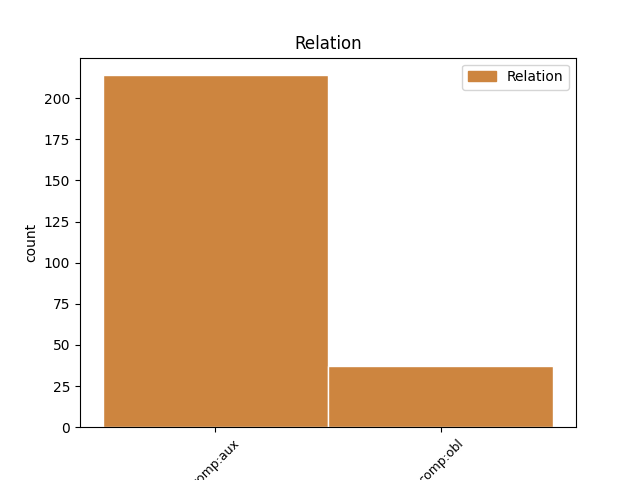
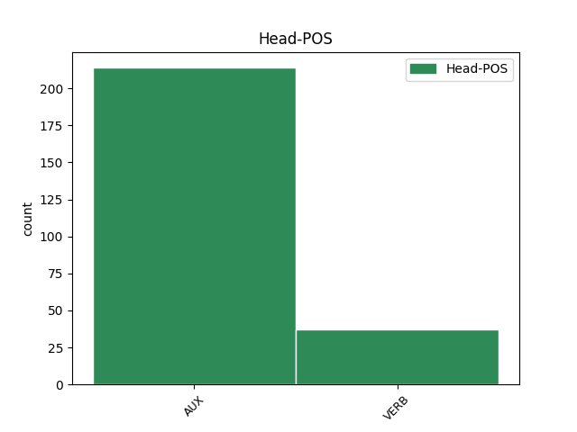
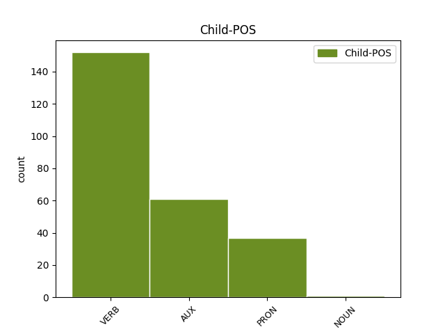

Distribution of features within this leaf



Agreement Rules sorted by frequency.
- When the dependent token is the complement for auxiliary(comp:aux) of the head token, and the dependent token is VERB.
1 En _ _ _ _ 0 _ _ _
2 fait _ _ _ _ 0 _ _ _
3 , _ _ _ _ 0 _ _ _
4 ce _ _ _ _ 0 _ _ _
5 qu' _ _ _ _ 0 _ _ _
6 on _ _ _ _ 0 _ _ _
7 a avoir AUX VA Mood=Ind|Number=Sing|Person=3|Tense=Pres|VerbForm=Fin 0 _ _ _
8 fait faire VERB V Gender=Masc|Number=Sing|Tense=Past|VerbForm=Part 7 comp:aux _ _
9 il _ _ _ _ 0 _ _ _
10 y _ _ _ _ 0 _ _ _
11 a _ _ _ _ 0 _ _ _
12 quelques _ _ _ _ 0 _ _ _
13 années _ _ _ _ 0 _ _ _
14 c' _ _ _ _ 0 _ _ _
15 était _ _ _ _ 0 _ _ _
16 d' _ _ _ _ 0 _ _ _
17 apprendre _ _ _ _ 0 _ _ _
18 comment _ _ _ _ 0 _ _ _
19 on _ _ _ _ 0 _ _ _
20 introduit _ _ _ _ 0 _ _ _
21 clandestinement _ _ _ _ 0 _ _ _
22 un _ _ _ _ 0 _ _ _
23 labo _ _ _ _ 0 _ _ _
24 de _ _ _ _ 0 _ _ _
25 biologie _ _ _ _ 0 _ _ _
26 moléculaire _ _ _ _ 0 _ _ _
27 à _ _ _ _ 0 _ _ _
28 Tokyo _ _ _ _ 0 _ _ _
29 et _ _ _ _ 0 _ _ _
30 de _ _ _ _ 0 _ _ _
31 l' _ _ _ _ 0 _ _ _
32 utiliser _ _ _ _ 0 _ _ _
33 pour _ _ _ _ 0 _ _ _
34 tester _ _ _ _ 0 _ _ _
35 génétiquement _ _ _ _ 0 _ _ _
36 l' _ _ _ _ 0 _ _ _
37 ADN _ _ _ _ 0 _ _ _
38 d' _ _ _ _ 0 _ _ _
39 échantillons _ _ _ _ 0 _ _ _
40 de _ _ _ _ 0 _ _ _
41 viande _ _ _ _ 0 _ _ _
42 de _ _ _ _ 0 _ _ _
43 baleine _ _ _ _ 0 _ _ _
44 et _ _ _ _ 0 _ _ _
45 identifier _ _ _ _ 0 _ _ _
46 ce _ _ _ _ 0 _ _ _
47 qu' _ _ _ _ 0 _ _ _
48 ils _ _ _ _ 0 _ _ _
49 étaient _ _ _ _ 0 _ _ _
50 vraiment _ _ _ _ 0 _ _ _
51 . _ _ _ _ 0 _ _ _
1 De _ _ _ _ 0 _ _ _
2 même _ _ _ _ 0 _ _ _
3 , _ _ _ _ 0 _ _ _
4 il _ _ _ _ 0 _ _ _
5 ne _ _ _ _ 0 _ _ _
6 sera _ _ _ _ 0 _ _ _
7 infligé _ _ _ _ 0 _ _ _
8 aucune _ _ _ _ 0 _ _ _
9 peine _ _ _ _ 0 _ _ _
10 plus _ _ _ _ 0 _ _ _
11 forte _ _ _ _ 0 _ _ _
12 que _ _ _ _ 0 _ _ _
13 celle _ _ _ _ 0 _ _ _
14 qui _ _ _ _ 0 _ _ _
15 était _ _ _ _ 0 _ _ _
16 applicable _ _ _ _ 0 _ _ _
17 à _ _ _ _ 0 _ _ _
18 le _ _ _ _ 0 _ _ _
19 moment _ _ _ _ 0 _ _ _
20 où _ _ _ _ 0 _ _ _
21 l' _ _ _ _ 0 _ _ _
22 acte _ _ _ _ 0 _ _ _
23 délictueux _ _ _ _ 0 _ _ _
24 a avoir AUX VA Mood=Ind|Number=Sing|Person=3|Tense=Pres|VerbForm=Fin 0 _ _ _
25 été être AUX VA Gender=Masc|Number=Sing|Tense=Past|VerbForm=Part 24 comp:aux _ _
26 commis _ _ _ _ 0 _ _ _
27 . _ _ _ _ 0 _ _ _
1 Aujourd'hui _ _ _ _ 0 _ _ _
2 , _ _ _ _ 0 _ _ _
3 les _ _ _ _ 0 _ _ _
4 opinions _ _ _ _ 0 _ _ _
5 publiques _ _ _ _ 0 _ _ _
6 , _ _ _ _ 0 _ _ _
7 la _ _ _ _ 0 _ _ _
8 presse _ _ _ _ 0 _ _ _
9 , _ _ _ _ 0 _ _ _
10 nous nous PRON PE Number=Plur|Person=1|PronType=Prs 11 comp:obl _ _
11 accusent accuser VERB V Mood=Ind|Number=Plur|Person=3|Tense=Pres|VerbForm=Fin 0 _ _ _
12 d' _ _ _ _ 0 _ _ _
13 être _ _ _ _ 0 _ _ _
14 à _ _ _ _ 0 _ _ _
15 les _ _ _ _ 0 _ _ _
16 abonnés _ _ _ _ 0 _ _ _
17 absents _ _ _ _ 0 _ _ _
18 alors _ _ _ _ 0 _ _ _
19 que _ _ _ _ 0 _ _ _
20 nous _ _ _ _ 0 _ _ _
21 allons _ _ _ _ 0 _ _ _
22 financer _ _ _ _ 0 _ _ _
23 une _ _ _ _ 0 _ _ _
24 grande _ _ _ _ 0 _ _ _
25 part _ _ _ _ 0 _ _ _
26 de _ _ _ _ 0 _ _ _
27 les _ _ _ _ 0 _ _ _
28 efforts _ _ _ _ 0 _ _ _
29 nationaux _ _ _ _ 0 _ _ _
30 . _ _ _ _ 0 _ _ _
1 Notre _ _ _ _ 0 _ _ _
2 réponse _ _ _ _ 0 _ _ _
3 à _ _ _ _ 0 _ _ _
4 de _ _ _ _ 0 _ _ _
5 telles _ _ _ _ 0 _ _ _
6 catastrophes _ _ _ _ 0 _ _ _
7 doit devoir AUX VM Mood=Ind|Number=Sing|Person=3|Tense=Pres|VerbForm=Fin 0 _ _ _
8 être _ _ _ _ 0 _ _ _
9 la _ _ _ _ 0 _ _ _
10 prévention prévention NOUN S Gender=Fem|Number=Sing 7 comp:aux _ _
11 et _ _ _ _ 0 _ _ _
12 le _ _ _ _ 0 _ _ _
13 projet _ _ _ _ 0 _ _ _
14 de _ _ _ _ 0 _ _ _
15 directive _ _ _ _ 0 _ _ _
16 qui _ _ _ _ 0 _ _ _
17 nous _ _ _ _ 0 _ _ _
18 est _ _ _ _ 0 _ _ _
19 soumis _ _ _ _ 0 _ _ _
20 nous _ _ _ _ 0 _ _ _
21 permet _ _ _ _ 0 _ _ _
22 de _ _ _ _ 0 _ _ _
23 créer _ _ _ _ 0 _ _ _
24 une _ _ _ _ 0 _ _ _
25 base _ _ _ _ 0 _ _ _
26 importante _ _ _ _ 0 _ _ _
27 en _ _ _ _ 0 _ _ _
28 vue _ _ _ _ 0 _ _ _
29 de _ _ _ _ 0 _ _ _
30 disposer _ _ _ _ 0 _ _ _
31 de _ _ _ _ 0 _ _ _
32 responsables _ _ _ _ 0 _ _ _
33 bien _ _ _ _ 0 _ _ _
34 formés _ _ _ _ 0 _ _ _
35 en _ _ _ _ 0 _ _ _
36 matière _ _ _ _ 0 _ _ _
37 de _ _ _ _ 0 _ _ _
38 sécurité _ _ _ _ 0 _ _ _
39 et _ _ _ _ 0 _ _ _
40 , _ _ _ _ 0 _ _ _
41 dans _ _ _ _ 0 _ _ _
42 le _ _ _ _ 0 _ _ _
43 même _ _ _ _ 0 _ _ _
44 temps _ _ _ _ 0 _ _ _
45 , _ _ _ _ 0 _ _ _
46 de _ _ _ _ 0 _ _ _
47 faire _ _ _ _ 0 _ _ _
48 ce _ _ _ _ 0 _ _ _
49 qui _ _ _ _ 0 _ _ _
50 doit _ _ _ _ 0 _ _ _
51 être _ _ _ _ 0 _ _ _
52 fait _ _ _ _ 0 _ _ _
53 . _ _ _ _ 0 _ _ _
Disagree Examples:
1 Cependant _ _ _ _ 0 _ _ _
2 , _ _ _ _ 0 _ _ _
3 le _ _ _ _ 0 _ _ _
4 contrat _ _ _ _ 0 _ _ _
5 conserve _ _ _ _ 0 _ _ _
6 ses _ _ _ _ 0 _ _ _
7 effets _ _ _ _ 0 _ _ _
8 envers _ _ _ _ 0 _ _ _
9 les _ _ _ _ 0 _ _ _
10 personnes _ _ _ _ 0 _ _ _
11 physiques _ _ _ _ 0 _ _ _
12 ou _ _ _ _ 0 _ _ _
13 morales _ _ _ _ 0 _ _ _
14 qui _ _ _ _ 0 _ _ _
15 ont avoir AUX VA Mood=Ind|Number=Plur|Person=3|Tense=Pres|VerbForm=Fin 0 _ _ _
16 reçu recevoir VERB V Gender=Masc|Number=Sing|Tense=Past|VerbForm=Part 15 comp:aux _ _
17 de _ _ _ _ 0 _ _ _
18 la _ _ _ _ 0 _ _ _
19 part _ _ _ _ 0 _ _ _
20 de _ _ _ _ 0 _ _ _
21 l' _ _ _ _ 0 _ _ _
22 acceptant _ _ _ _ 0 _ _ _
23 , _ _ _ _ 0 _ _ _
24 en _ _ _ _ 0 _ _ _
25 exécution _ _ _ _ 0 _ _ _
26 de _ _ _ _ 0 _ _ _
27 le _ _ _ _ 0 _ _ _
28 présent _ _ _ _ 0 _ _ _
29 contrat _ _ _ _ 0 _ _ _
30 , _ _ _ _ 0 _ _ _
31 la _ _ _ _ 0 _ _ _
32 mise _ _ _ _ 0 _ _ _
33 à _ _ _ _ 0 _ _ _
34 disposition _ _ _ _ 0 _ _ _
35 d' _ _ _ _ 0 _ _ _
36 oeuvres _ _ _ _ 0 _ _ _
37 dites _ _ _ _ 0 _ _ _
38 derivées _ _ _ _ 0 _ _ _
39 , _ _ _ _ 0 _ _ _
40 ou _ _ _ _ 0 _ _ _
41 d' _ _ _ _ 0 _ _ _
42 oeuvres _ _ _ _ 0 _ _ _
43 dites _ _ _ _ 0 _ _ _
44 collectives _ _ _ _ 0 _ _ _
45 , _ _ _ _ 0 _ _ _
46 ceci _ _ _ _ 0 _ _ _
47 tant _ _ _ _ 0 _ _ _
48 qu' _ _ _ _ 0 _ _ _
49 elles _ _ _ _ 0 _ _ _
50 respectent _ _ _ _ 0 _ _ _
51 pleinement _ _ _ _ 0 _ _ _
52 leurs _ _ _ _ 0 _ _ _
53 obligations _ _ _ _ 0 _ _ _
54 . _ _ _ _ 0 _ _ _
1 Je _ _ _ _ 0 _ _ _
2 déclare _ _ _ _ 0 _ _ _
3 reprise _ _ _ _ 0 _ _ _
4 la _ _ _ _ 0 _ _ _
5 session _ _ _ _ 0 _ _ _
6 de _ _ _ _ 0 _ _ _
7 le _ _ _ _ 0 _ _ _
8 Parlement _ _ _ _ 0 _ _ _
9 européen _ _ _ _ 0 _ _ _
10 qui _ _ _ _ 0 _ _ _
11 avait _ _ _ _ 0 _ _ _
12 été _ _ _ _ 0 _ _ _
13 interrompue _ _ _ _ 0 _ _ _
14 le _ _ _ _ 0 _ _ _
15 vendredi _ _ _ _ 0 _ _ _
16 17 _ _ _ _ 0 _ _ _
17 décembre _ _ _ _ 0 _ _ _
18 dernier _ _ _ _ 0 _ _ _
19 et _ _ _ _ 0 _ _ _
20 je _ _ _ _ 0 _ _ _
21 vous vous PRON PE Number=Plur|Person=2|PronType=Prs 22 comp:obl _ _
22 renouvelle renouveler VERB V Mood=Ind|Number=Sing|Person=1|Tense=Pres|VerbForm=Fin 0 _ _ _
23 tous _ _ _ _ 0 _ _ _
24 mes _ _ _ _ 0 _ _ _
25 voeux _ _ _ _ 0 _ _ _
26 en _ _ _ _ 0 _ _ _
27 espérant _ _ _ _ 0 _ _ _
28 que _ _ _ _ 0 _ _ _
29 vous _ _ _ _ 0 _ _ _
30 avez _ _ _ _ 0 _ _ _
31 passé _ _ _ _ 0 _ _ _
32 de _ _ _ _ 0 _ _ _
33 bonnes _ _ _ _ 0 _ _ _
34 vacances _ _ _ _ 0 _ _ _
35 . _ _ _ _ 0 _ _ _
1 Je _ _ _ _ 0 _ _ _
2 déclare _ _ _ _ 0 _ _ _
3 reprise _ _ _ _ 0 _ _ _
4 la _ _ _ _ 0 _ _ _
5 session _ _ _ _ 0 _ _ _
6 de _ _ _ _ 0 _ _ _
7 le _ _ _ _ 0 _ _ _
8 Parlement _ _ _ _ 0 _ _ _
9 européen _ _ _ _ 0 _ _ _
10 qui _ _ _ _ 0 _ _ _
11 avait _ _ _ _ 0 _ _ _
12 été _ _ _ _ 0 _ _ _
13 interrompue _ _ _ _ 0 _ _ _
14 le _ _ _ _ 0 _ _ _
15 vendredi _ _ _ _ 0 _ _ _
16 17 _ _ _ _ 0 _ _ _
17 décembre _ _ _ _ 0 _ _ _
18 dernier _ _ _ _ 0 _ _ _
19 et _ _ _ _ 0 _ _ _
20 je _ _ _ _ 0 _ _ _
21 vous _ _ _ _ 0 _ _ _
22 renouvelle _ _ _ _ 0 _ _ _
23 tous _ _ _ _ 0 _ _ _
24 mes _ _ _ _ 0 _ _ _
25 voeux _ _ _ _ 0 _ _ _
26 en _ _ _ _ 0 _ _ _
27 espérant _ _ _ _ 0 _ _ _
28 que _ _ _ _ 0 _ _ _
29 vous _ _ _ _ 0 _ _ _
30 avez avoir AUX VA Mood=Ind|Number=Plur|Person=2|Tense=Pres|VerbForm=Fin 0 _ _ _
31 passé passer VERB V Gender=Masc|Number=Sing|Tense=Past|VerbForm=Part 30 comp:aux _ _
32 de _ _ _ _ 0 _ _ _
33 bonnes _ _ _ _ 0 _ _ _
34 vacances _ _ _ _ 0 _ _ _
35 . _ _ _ _ 0 _ _ _
1 En _ _ _ _ 0 _ _ _
2 attendant _ _ _ _ 0 _ _ _
3 , _ _ _ _ 0 _ _ _
4 je _ _ _ _ 0 _ _ _
5 souhaiterais _ _ _ _ 0 _ _ _
6 , _ _ _ _ 0 _ _ _
7 comme _ _ _ _ 0 _ _ _
8 un _ _ _ _ 0 _ _ _
9 certain _ _ _ _ 0 _ _ _
10 nombre _ _ _ _ 0 _ _ _
11 de _ _ _ _ 0 _ _ _
12 collègues _ _ _ _ 0 _ _ _
13 me _ _ _ _ 0 _ _ _
14 l' _ _ _ _ 0 _ _ _
15 ont avoir AUX VA Mood=Ind|Number=Plur|Person=3|Tense=Pres|VerbForm=Fin 0 _ _ _
16 demandé demander VERB V Gender=Masc|Number=Sing|Tense=Past|VerbForm=Part 15 comp:aux _ SpaceAfter=No
17 , _ _ _ _ 0 _ _ _
18 que _ _ _ _ 0 _ _ _
19 nous _ _ _ _ 0 _ _ _
20 observions _ _ _ _ 0 _ _ _
21 une _ _ _ _ 0 _ _ _
22 minute _ _ _ _ 0 _ _ _
23 de _ _ _ _ 0 _ _ _
24 silence _ _ _ _ 0 _ _ _
25 pour _ _ _ _ 0 _ _ _
26 toutes _ _ _ _ 0 _ _ _
27 les _ _ _ _ 0 _ _ _
28 victimes _ _ _ _ 0 _ _ _
29 , _ _ _ _ 0 _ _ _
30 de _ _ _ _ 0 _ _ _
31 les _ _ _ _ 0 _ _ _
32 tempêtes _ _ _ _ 0 _ _ _
33 notamment _ _ _ _ 0 _ _ _
34 , _ _ _ _ 0 _ _ _
35 dans _ _ _ _ 0 _ _ _
36 les _ _ _ _ 0 _ _ _
37 différents _ _ _ _ 0 _ _ _
38 pays _ _ _ _ 0 _ _ _
39 de _ _ _ _ 0 _ _ _
40 l' _ _ _ _ 0 _ _ _
41 Union _ _ _ _ 0 _ _ _
42 Européenne _ _ _ _ 0 _ _ _
43 qui _ _ _ _ 0 _ _ _
44 ont _ _ _ _ 0 _ _ _
45 été _ _ _ _ 0 _ _ _
46 touchés _ _ _ _ 0 _ _ _
47 . _ _ _ _ 0 _ _ _
1 Vous _ _ _ _ 0 _ _ _
2 avez _ _ _ _ 0 _ _ _
3 probablement _ _ _ _ 0 _ _ _
4 appris _ _ _ _ 0 _ _ _
5 par _ _ _ _ 0 _ _ _
6 la _ _ _ _ 0 _ _ _
7 presse _ _ _ _ 0 _ _ _
8 et _ _ _ _ 0 _ _ _
9 par _ _ _ _ 0 _ _ _
10 la _ _ _ _ 0 _ _ _
11 télévision _ _ _ _ 0 _ _ _
12 que _ _ _ _ 0 _ _ _
13 plusieurs _ _ _ _ 0 _ _ _
14 attentats _ _ _ _ 0 _ _ _
15 à _ _ _ _ 0 _ _ _
16 la _ _ _ _ 0 _ _ _
17 bombe _ _ _ _ 0 _ _ _
18 et _ _ _ _ 0 _ _ _
19 crimes _ _ _ _ 0 _ _ _
20 ont avoir AUX VA Mood=Ind|Number=Plur|Person=3|Tense=Pres|VerbForm=Fin 0 _ _ _
21 été être AUX VA Gender=Masc|Number=Sing|Tense=Past|VerbForm=Part 20 comp:aux _ _
22 perpétrés _ _ _ _ 0 _ _ _
23 à _ _ _ _ 0 _ _ _
24 le _ _ _ _ 0 _ _ _
25 Sri _ _ _ _ 0 _ _ _
26 Lanka _ _ _ _ 0 _ _ _
27 . _ _ _ _ 0 _ _ _